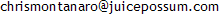
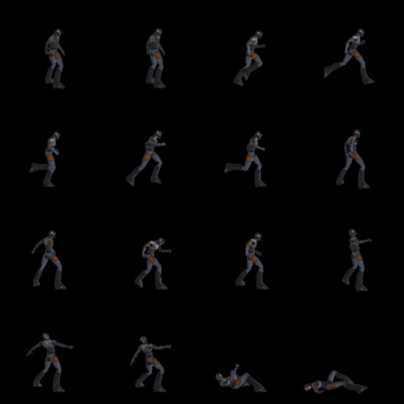
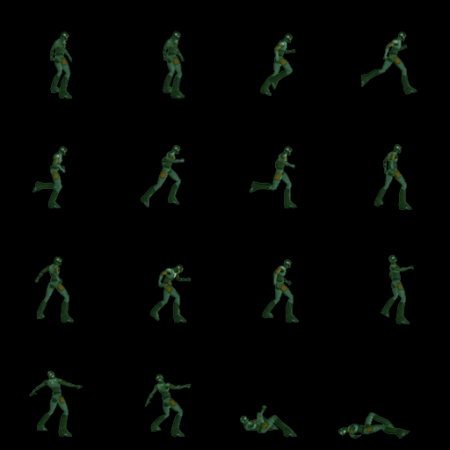
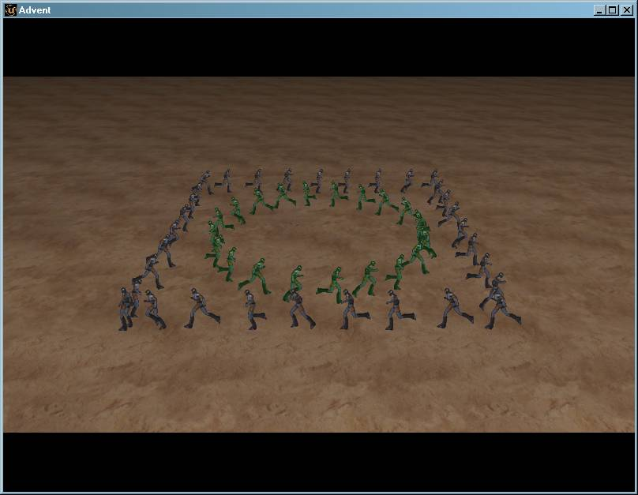
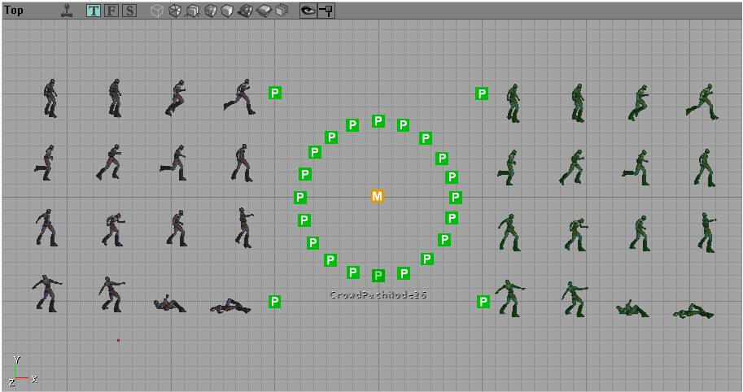
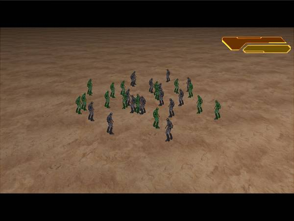
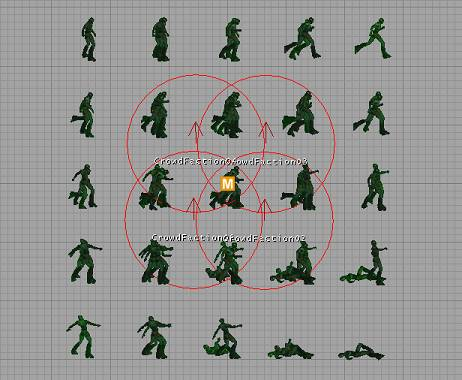
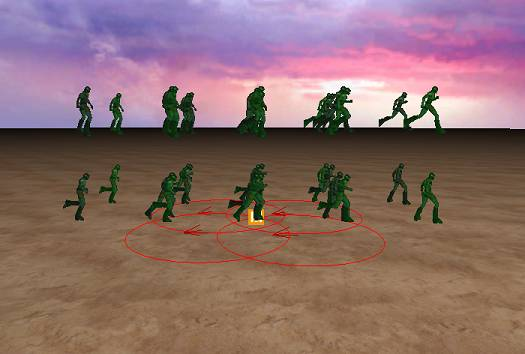
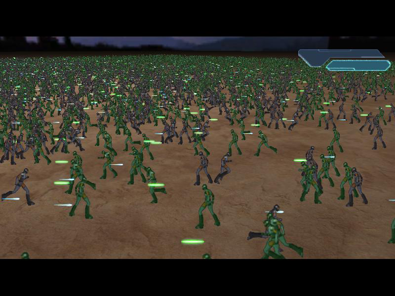

Chris Montanaro

Résumé
Unreal Engine 2 Modification: 2D Crowd System
A 2D Crowd System for rendering large crowds in the distance which exhibit designer-specified, real-time behaviors such as battling, path-following, and socializing.
The purpose of this project was to add functionality to the Unreal Editor that afforded designers the ability to place large crowds of actors in the distance, adjust a number of settings to dictate their behavior, and allow an unscripted scene to unfold which emulated natural behavior as closely as possible. The types of behavior supported were battling, socializing, and path-following.
What follows are in-Editor screenshots depicting a variety of viewports from within the Unreal Editor which demonstrate how such crowds could be placed into the 3D world, and the resultant scenes produced. Bear in mind that all art is programmer-generated, intended to showcase the capabilities of the new feature. In no way are any of the screenshots representative of a polished scene intended for use in-game.
While the following scenes obviously do not stand up to scrutiny from such a close distance, the requirements for this feature called for scenes that take place far off in the background (such as in a distant valley as seen from a mountain cliff). At such distances, the difference between sprite-based and model-based characters is unlikely to be discernable.
Sample Source Art: |
|
|  |  |
|
The source art used in the following examples. The crowd system supported a symmetrical texture grid of 2D sprite
frames to contain the desired animations. The number of frames in the grid and the frame offsets for each animation were
specified by the designer. In the above example, frames 0,1 represent an idle animation, frames 2-6 represent a running
animation, etc.
|
|
Path-Following: |
|
|

An example of two path-following crowds in action. |
|
|

The previous path-following scene as it appears inside the Unreal Editor from the top-down orthogonal viewport. The animation textures serve as placeholders to represent the individual crowds themselves, although their positions are irrelevant. The M icon is the crowd manager object that represents this particular scene, while the P icons are the path nodes, which can be associated with either crowd. Their order is determined by a value which is also designer-specified. |
|
Socializing: |
|
|

An example of four socializing crowds in action. They appear to all be in the same frame of animation, since the texture for crowd battles was used in this example. In practice, all 16 (or more) frames could be dedicated to idling, walking, conversing, etc., in which case a much truer scene would unfold. |
|
|

The previous socializing scene as it appears inside the Unreal Editor from the top-down orthogonal viewport. The circles represent individual crowds, with the circumference of the circles representing their boundaries. The arrows indicate the initial facing direction of crowd members, which can also be random or center-facing. Social crowds could be related to other social crowds as friends, in which case members could exchange and associate with one other. As before, all settings were adjustable. |
|
|

The previous path-following scene as it appears inside the Unreal Editor from a perspective viewport. |
|
Battling: |
|
|

An extreme example of two 5000-member crowds doing battle with projectiles and melee attacks to demonstrate the capabilities of the crowd system. The battling crowd system was the most complex, and essentially allowed for massive, real-time battles between factions in what resembles an RPG-style confrontation. Numerous settings could be specified in order to effect a specific outcome, including member velocity, hit points, strength, attack durations and delays, reload times, etc. This resulted in true, unique battles in real time with the potential for unpredictable results if so desired. A natural variance was built in to every action, a setting which could also be adjusted by the designer. Notably, the above scene ran well above the target frame rate on the Xbox. |
|